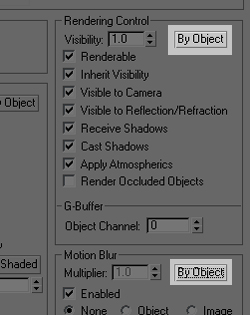
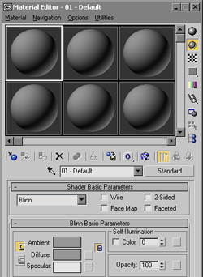
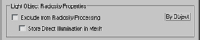
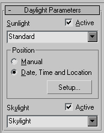
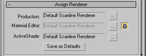
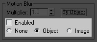
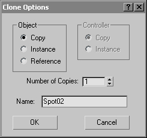
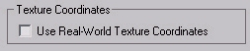

Layers

By default, all created objects will remain controllable at the object level. Rendering, Motion Blur and Display properties will be available at an individual level for optimal flexibility. Note that the Layers feature can still be used.
Material Editor

The Material Editor will be populated by default with the Standard Material. This material is preferred for non-physically based renderings that require total control over color, reflections, environment etc.
Lights


The Lights will default to not cast any shadows. This is to facilitate the process of creating fill lights, highlights and effects that do not require shadows in traditionnal animation scenes.
This will facilitate the management of multiple light sources, allow light going through transparent objects and ensure accurate shadows for linear and area lights rendering.
Linear and Area lights will be rendered by default when a Radiosity solution is used, because their, Store their direct illumination flag will be set to false.
Daylight

Daylight assemblies will always default to the Standard sun and Standard sky, the sun being predefined to a Raytraced Shadows shadow generator.
Rendering

The 3ds max Scanline Renderer will be used by default.
No Advanced Lighting plugin or Exposure Control plugin will be assigned.
Motion Blur

For best default performance, none of the objects will generate motion blur effects by default.
Cloning

Modeling of characters or animation projects often requires to construct objects based on an existing one. For this reason, the default mode for cloning an object will be Copy..
i-drop
Studios who use assets published as i-drop content on internal websites do not need that textures get downloaded in every /downloads/ folder of their 3ds max installs. For this reason, with the Max default settings, this is turned off (as opposed to the DesignVIZ defaults).
Inverse Kinematics
The solver of the HD IK chains will be set to calculate interpolation between keyframes. This setting is optimized for animation.
Viewport Shading
The interactive viewport of 3ds max is well suited for interactive environments where a few light sources are defined and interacts in real time with the scene.
Real-World Texture Coordinates

There are two workflows for texture mapping objects, controlled by the "Use Real-World Texture Coordinates" preference. Modeling and animation projects typically involve free-form textures to be placed on objects for maximum visual effect. For this reason the default value of this toggle is OFF, which means that objects and modifiers which generate texture coordinates don't scale them to the real-world size of the object. This is the style of texturing which 3ds max has traditionally supported.